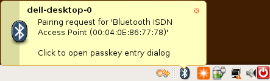

BlueFritz!
Archivierte Anleitung
Dieser Artikel wurde archiviert, da er - oder Teile daraus - nur noch unter einer älteren Ubuntu-Version nutzbar ist. Diese Anleitung wird vom Wiki-Team weder auf Richtigkeit überprüft noch anderweitig gepflegt. Zusätzlich wurde der Artikel für weitere Änderungen gesperrt.
Anmerkung: Die Internet-Einwahl in Kombination mit dem BlueFRITZ! ISDN Set  bereitet ab Ubuntu 8.10 Probleme und scheint nicht mehr möglich zu sein. Allerdings lässt sich der BlueFRITZ! USB Adapter weiterhin problemlos zur Kopplung mit einem BlueTooth-fähigen UMTS-Handy verwenden.
bereitet ab Ubuntu 8.10 Probleme und scheint nicht mehr möglich zu sein. Allerdings lässt sich der BlueFRITZ! USB Adapter weiterhin problemlos zur Kopplung mit einem BlueTooth-fähigen UMTS-Handy verwenden.
Zum Verständnis dieses Artikels sind folgende Seiten hilfreich:
 Der BlueFRITZ! USB Adapter der Firma AVM ermöglicht in Kombination mit einem geeigneten Access Point oder auch einem Mobiltelefon die Einwahl in das Internet via Bluetooth (letzteres ist nicht Inhalt dieses Artikels). Dieser USB Adapter existiert in zwei unterschiedlichen Varianten - derzeit im Handel erhältlich ist die Version 2.0 (blau/transparent). Für die ältere Version 1.0 (dunkelblau) ist zusätzlich eine Firmware erforderlich, die nicht in Ubuntu enthalten ist, aber im Internet zur Verfügung steht.
Der BlueFRITZ! USB Adapter der Firma AVM ermöglicht in Kombination mit einem geeigneten Access Point oder auch einem Mobiltelefon die Einwahl in das Internet via Bluetooth (letzteres ist nicht Inhalt dieses Artikels). Dieser USB Adapter existiert in zwei unterschiedlichen Varianten - derzeit im Handel erhältlich ist die Version 2.0 (blau/transparent). Für die ältere Version 1.0 (dunkelblau) ist zusätzlich eine Firmware erforderlich, die nicht in Ubuntu enthalten ist, aber im Internet zur Verfügung steht.
Prinzipiell sind drei Schritte erforderlich:
Bluetooth-Verbindung aufbauen ("Pairing")
CAPI starten
Internetverbindung herstellen
Installation¶
Alle Pakete, die für die Nutzung des BlueFRITZ! USB Adapters 2.0 notwendig sind, sind bereits in Ubuntu vorhanden oder können aus den Paketquellen nachinstalliert werden. Die allgemeine Vorgehensweise zur Einrichtung von Bluetooth ist im Artikel Bluetooth/Einrichtung beschrieben.
Welche Version des BlueFritz! USB Adapters vorhanden ist, lässt sich anhand der Farbe des Sticks oder besser in einem Terminalfenster [2] mit
lsusb
anhand der USB-ID erkennen:
Version 1.0: ID 057c:2200 AVM GmbH Version 2.0: ID 057c:3800 AVM GmbH BlueFRITZ! Bluetooth Stick
Für die Version 1.0 ist vorab die (einmalige) Installation einer geeigneten Firmware erforderlich. Diese muss heruntergeladen und nach /lib/firmware/2.6.xx-yy-zz/ kopiert werden - der Zielordner wird mit den folgenden Befehlen automatisch der eigenen Kernel-Version angepasst [2], [3] :
wget ftp://ftp.in-berlin.de/pub/capi4linux/firmware/bluefusb/3-18-39/bfubase.frm sudo cp bfubase.frm /lib/firmware/`uname -r`/
Manuelles Verbinden mit Access Point¶
Hinweis:
Der Access Point aus dem BlueFRITZ! ISDN Set setzt zwingend voraus, dass der NTBA über ein Netzkabel mit Strom versorgt wird, sonst scheitert der Verbindungsaufbau.
Für eine erste Test-Verbindung mit dem Access Point (AP) benötigt man die PIN (auch "passkey" genannt) des eigenen AP. Dieses "Bluetooth-Kennwort" ist auf der Unterseite des AP aufgedruckt. Um nun den Verbindungsaufbau zu starten, reicht es, den nachfolgenden Befehl in einem Terminal [2] auszuführen:
sudo ciptool search
Jetzt wird nach dem AP gesucht und falls dieser in Reichweite ist, erscheint nach kurzer Zeit im Bluetooth-Manager (im Panel) ein Hinweis, dass für diesen AP eine Authentifizierung notwendig ist:

Nach Mausklick auf den Hinweis öffnet sich ein Dialog, in dem das Bluetooth Kennwort bzw. die PIN für den AP eingegeben werden kann:
Hinweis:
Für die Eingabe der PIN hat man nur wenig Zeit (ca. 10 Sekunden). Sollte die PIN innerhalb dieser Zeitspanne nicht oder nicht korrekt eingegeben werden, wird der Verbindungsversuch abgebrochen und muss wiederholt werden!
Wurde die PIN korrekt eingegeben, erscheint als Ausgabe im Terminal
sudo ciptool search
Ausgabe:
Searching ...
Checking service for aa:bb:cc:dd:ee:ff
Connecting to device aa:bb:cc:dd:ee:ffaa:bb:cc:dd:ee:ff entspricht dabei der Bluetooth-Adresse des eigenen AP. Die PIN wird als passkey "..."; in der Datei /etc/bluetooth/hcid.conf gespeichert. Nach erfolgreichem Verbindungsaufbau leuchten anschließend beide LED's des BlueFritz! USB Sticks.
Weiterhin erscheint beim Bluetooth-Manager im Panel folgender Hinweis, der ebenfalls das Zustandekommen der Verbindung signalisiert:
Nachteil dieser Variante ist, dass es einige Sekunden dauert, bis eine Verbindung zustande kommt, da nach dem AP gesucht wird. Schneller geht es daher, wenn man sich direkt mit dem eigenen AP verbindet. Dies kann durch folgenden Befehl erreicht werden:
sudo ciptool connect aa:bb:cc:dd:ee:ff
aa:bb:cc:dd:ee:ff muss dabei durch die Bluetooth-Adresse des eigenen AP ersetzt werden. Im Erfolgsfall gibt es keine weitere Ausgabe im Terminal - wie oben bereits erwähnt leuchten nun aber beide LED's am BlueFritz! USB Stick.
Überprüfen des Verbindungs-Status¶
Um den aktuellen Bluetooth Verbindungs-Status zu überprüfen, kann folgender Befehl in einem Terminal [2] eingegeben werden:
sudo ciptool show
Als Ausgabe erhält man dann im Falle einer bestehenden aktiven Verbindung folgende Zeile:
1 aa:bb:cc:dd:ee:ff connected
wobei aa:bb:cc:dd:ee:ff wiederum die Adresse des eigenen AP ist.
Internet-Einwahl mittels AP-ISDN und CAPI¶
| AVM AP-ISDN |
Installation¶
Für den Einsatz des BlueFritz! USB Adapters zusammen mit dem AVM AP-ISDN (= BlueFRITZ! ISDN Set) müssen folgende Pakete installiert [1] werden:
capiutils
libcapi20-3
pppdcapiplugin
 mit apturl
mit apturl
Paketliste zum Kopieren:
sudo apt-get install capiutils libcapi20-3 pppdcapiplugin
sudo aptitude install capiutils libcapi20-3 pppdcapiplugin
Wurden sowohl alle Pakete für das CAPI Subsystem installiert als auch eine Bluetooth-Verbindung zwischen BlueFRITZ! USB und AP-ISDN wie im vorangegangenen Abschnitt beschrieben hergestellt, kann man das CAPI mit folgendem Befehl in einem Terminal [2] starten:
sudo capiinit start
Zum Überprüfen des CAPI in einem Terminal [2] den folgenden Befehl eingeben:
capiinfo
Nun sollte eine Ausgabe ähnlich der folgenden erscheinen:
Number of Controllers : 1 Controller 1: Manufacturer: AVM GmbH CAPI Version: 2.0 Manufacturer Version: 3.11-07 (49.23) Serial Number: 1000001 BChannels: 2 Global Options: 0x00000039 internal controller supported DTMF supported Supplementary Services supported channel allocation supported (leased lines) B1 protocols support: 0x4000011f 64 kbit/s with HDLC framing 64 kbit/s bit-transparent operation V.110 asynconous operation with start/stop byte framing V.110 synconous operation with HDLC framing T.30 modem for fax group 3 Modem asyncronous operation with start/stop byte framing B2 protocols support: 0x00000b1b ISO 7776 (X.75 SLP) Transparent LAPD with Q.921 for D channel X.25 (SAPI 16) T.30 for fax group 3 ISO 7776 (X.75 SLP) with V.42bis compression V.120 asyncronous mode V.120 bit-transparent mode B3 protocols support: 0x800000bf Transparent T.90NL, T.70NL, T.90 ISO 8208 (X.25 DTE-DTE) X.25 DCE T.30 for fax group 3 T.30 for fax group 3 with extensions Modem 0100 0200 39000000 1f010040 1b0b0000 bf000080 00000000 00000000 00000000 00000000 00000000 00000000 01000001 00020000 00000000 00000000 00000000 Supplementary services support: 0x000003ff Hold / Retrieve Terminal Portability ECT 3PTY Call Forwarding Call Deflection MCID CCBS
Hinweis:
Bitte kontrollieren, ob BChannels: 2 verfügbare B-Kanäle anzeigt. Nur dann ist das CAPI korrekt initialisiert.
Das CAPI bleibt genau wie die Bluetooth-Verbindung bis zum Herunterfahren des Rechners geladen. Jetzt kann man sich auf Basis von "pppd" mit verschiedenen grafischen Einwahlprogrammen ins Internet einwählen. Auch wenn diese inzwischen an Bedeutung verloren haben, können Tarifmanager Hilfestellung bei der Tarifwahl geben.
Automatisches Verbinden mit Access Point¶
Um nicht bei jedem Systemstart manuell eine Bluetooth-Verbindung mit dem AP herzustellen und das CAPI System zu initialisieren, bietet sich z.B. die Datei rc.local [4],[5] an. In diese Datei sollte folgender Inhalt eingefügt werden:
ciptool connect aa:bb:cc:dd:ee:ff capiinit start
Hinweis:
"sudo" muss nicht vorangestellt werden, da rc.local mit root-Rechten ausgeführt wird!
Verbindung mit Access Point trennen¶
Soll die Bluetooth-Verbindung zwischen dem BlueFRITZ! USB Stick und dem AP wieder getrennt werden, reicht folgender Befehl im Terminal [2]:
sudo ciptool release
Nach Eingabe des Befehls erlischt die zweite LED am BlueFRITZ! USB Stick - eine zusätzliche Ausgabe eines Status-Textes im Terminal findet nicht statt.
Probleme¶
Connection refused¶
Die Fehlermeldung
Can't connect L2CAP socket: Connnection refused.
tritt auf, wenn die Verbindungsanforderung vom AP zurückgewiesen wurde (z.B. weil die angegebene PIN falsch ist).
Connection timed out¶
Die Fehlermeldung
Can't connect L2CAP socket: Connection timed out.
tritt auf, wenn zwischen Aufforderung zur PIN-Eingabe und tatsächlicher PIN-Eingabe zu viel Zeit verstrichen ist.
Permission denied¶
Die Fehlermeldung
Can't create connection: Permission denied.
tritt auf, wenn man "ciptool search" oder "ciptool connect" nicht mit Root-Rechten aufgerufen hat.
Operation now in progress¶
Die Fehlermeldung
Can't connect L2CAP socket: Operation now in progress
tritt ab Ubuntu 8.10 auf (getestet mit 9.04). Diese beiden Ubuntu-Versionen sind inkompatibel mit dem BlueFRITZ! ISDN Set.
Links¶
ISDN-Karten - Übersichtsartikel
Bluetooth/Blueman - komfortable Verwaltung von Bluetooth-Verbindungen
AVM BlueFRITZ! USB v2.0
- HerstellerseiteAVM BlueFRITZ! ISDN Set
- AVM BlueFRITZ! USB Adapter und AP-ISDNAVM BlueFRITZ! DSL Set
- AVM BlueFRITZ! USB Adapter und AP-DSLAVM BlueFRITZ Startpaket
- AVM BlueFRITZ! USB Adapter und AP-X (ISDN TK-Anlage)Bluetooth-Produkte von AVM unter Linux einsetzen
- Hintergrundwissen für Experten
- Erstellt mit Inyoka
-
 2004 – 2017 ubuntuusers.de • Einige Rechte vorbehalten
2004 – 2017 ubuntuusers.de • Einige Rechte vorbehalten
Lizenz • Kontakt • Datenschutz • Impressum • Serverstatus -
Serverhousing gespendet von